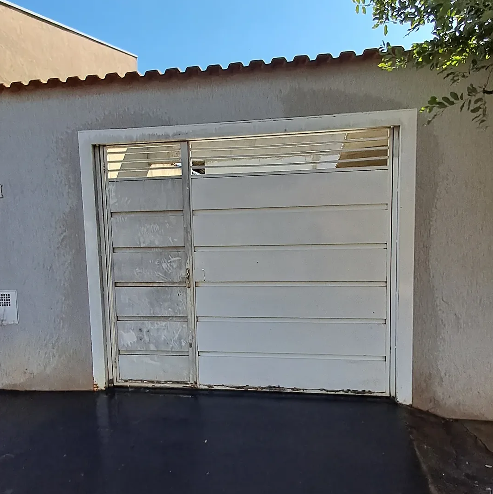
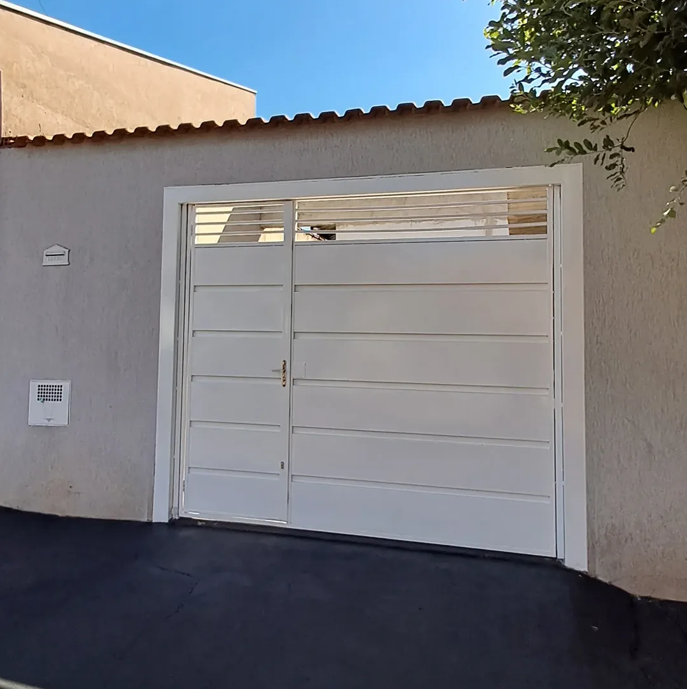
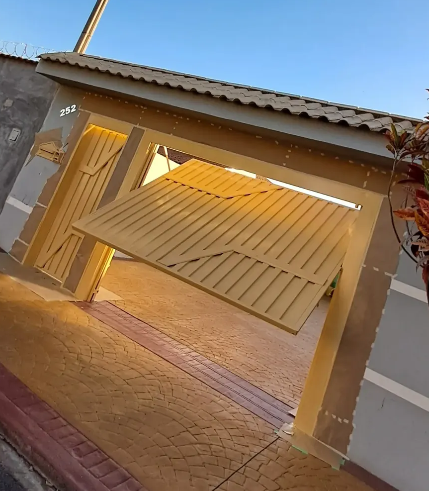
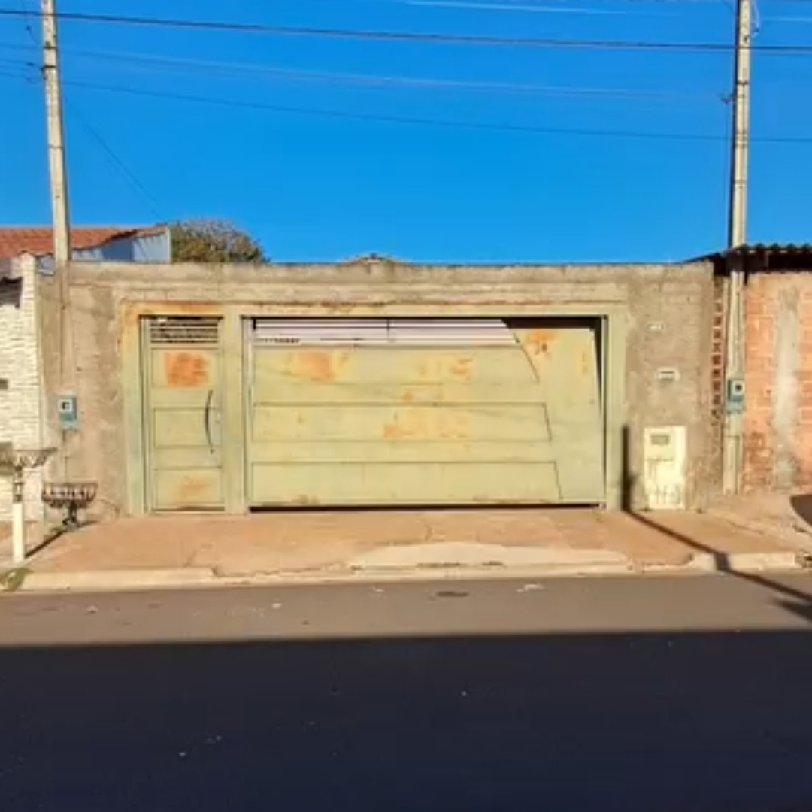
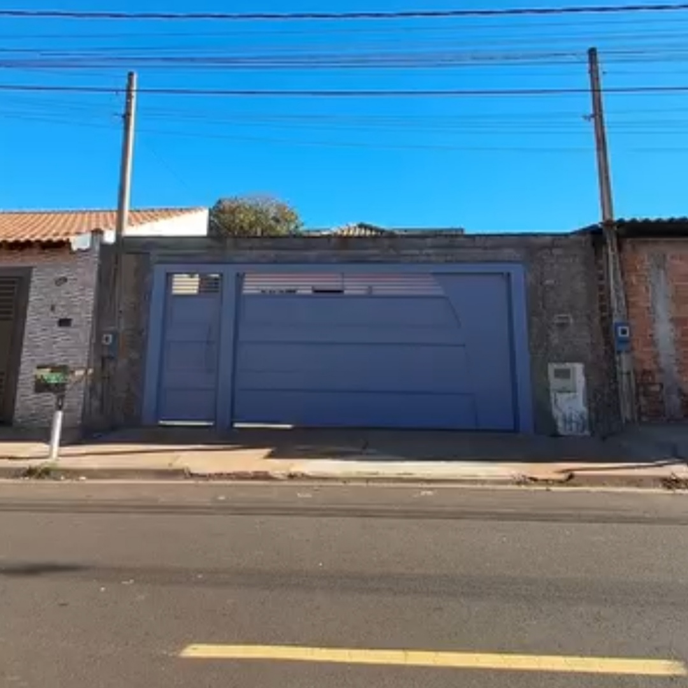

⌁
Pintura
mecanizada
Aplicação precisa e uniforme para um acabamento visual superior.
↗Pintura mecanizada · Ribeirão Preto — SP
Precisão, cuidado e acabamento superior para transformar portões e fachadas.
A Distak Pinturas une pintura mecanizada, precisão e olhar apurado para devolver presença às superfícies. O resultado é um acabamento uniforme, elegante e pensado para valorizar o seu imóvel.
Conheça nosso trabalho ↗O que fazemos
Um serviço especializado para quem não abre mão de um bom acabamento.
Trabalhos realizados
Uma seleção de projetos para mostrar o cuidado da Distak em cada superfície.

Antes
Depois
Portões
Antes
DepoisNovas fachadas, portões e acabamentos podem entrar nesta galeria.
Simples e direto
Você conta o que precisa. A Distak entende o projeto e prepara uma solução sob medida para o seu portão ou fachada.
Entendemos a superfície e o resultado que você busca.
Você recebe uma proposta clara, sem compromisso.
O serviço é realizado com cuidado e precisão.
Vamos conversar
Solicite seu orçamento online. É rápido, fácil e sem compromisso.
Imagem ampliada